TOP 10 BESTE SPIELER DER WM
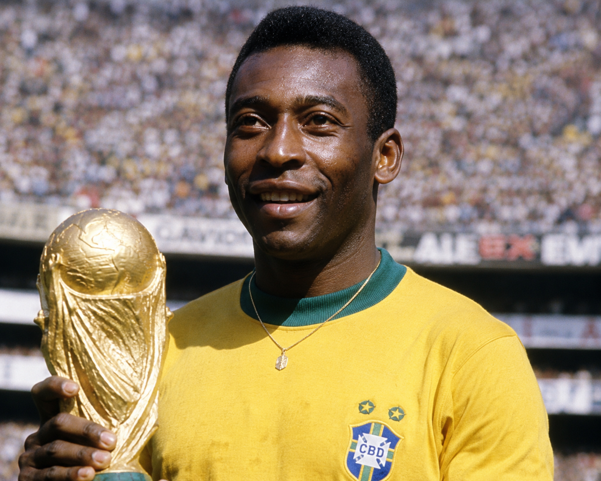
Pele
Stürmer
🏆🏆🏆(1958, 1962, 1970)
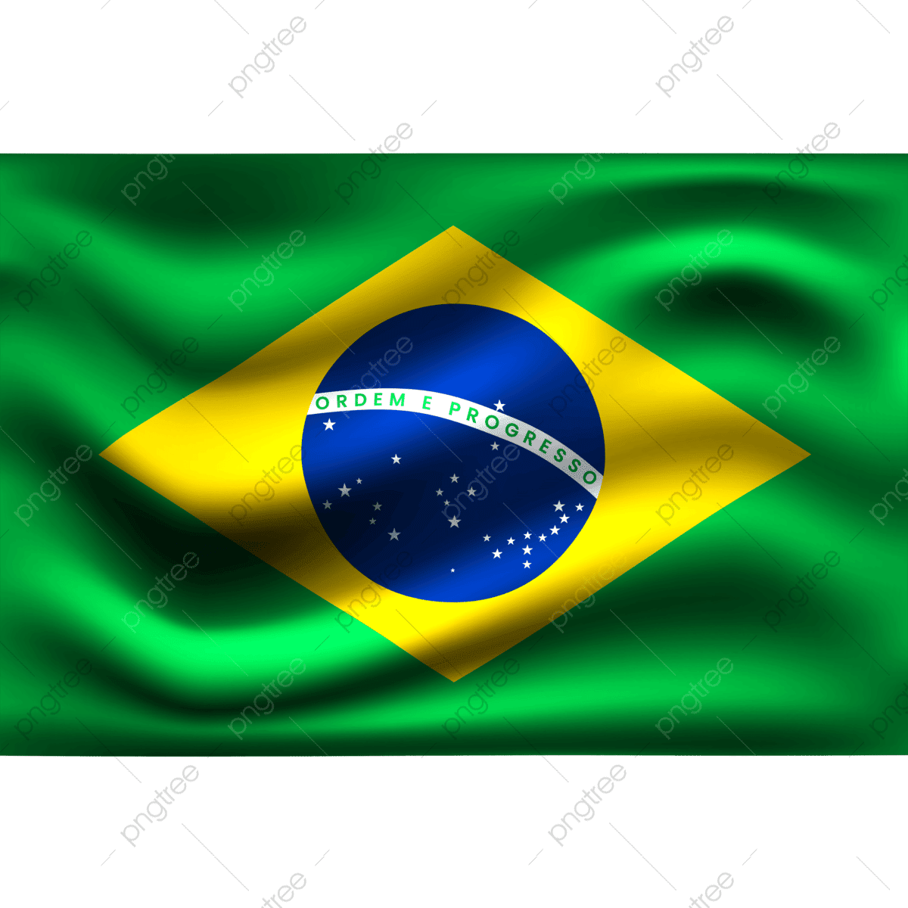
Stürmer
🏆🏆🏆(1958, 1962, 1970)
Pelé gilt als einer der größten Fußballspieler aller Zeiten.
Er gewann als einziger Spieler 🏆 drei FIFA-Weltmeisterschaften
und erzielte insgesamt 12 WM-Tore.
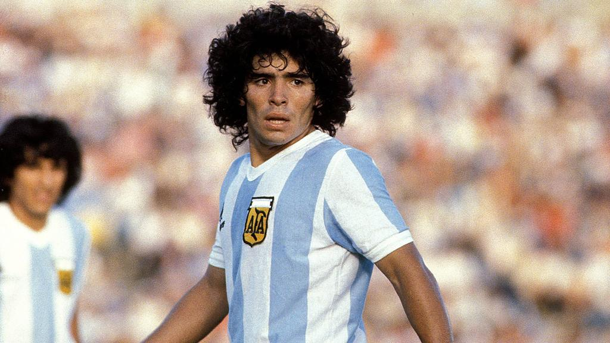
Diego Maradona
Offensives Mittelfeld
🏆(1986)
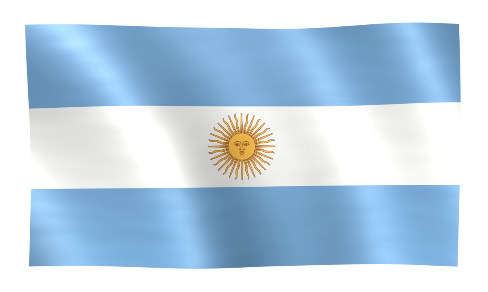
Offensives Mittelfeld
🏆(1986)
Maradona führte Argentinien 1986 zum Weltmeistertitel.
Sein Solo gegen England zählt zu den berühmtesten ⚽ Toren der Fußballgeschichte.
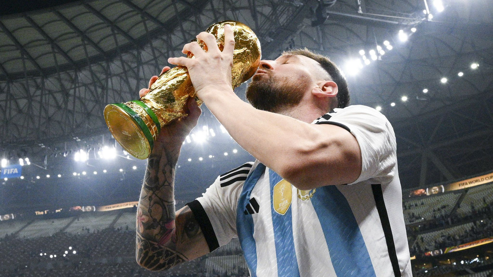
Lionel Messi
Stürmer
🏆(2022)
Stürmer
🏆(2022)
Messi krönte seine Karriere mit dem WM-Sieg 2022.
Er wurde zweimal als ⭐ bester Spieler einer Weltmeisterschaft ausgezeichnet (2014 und 2022).
Kylian Mbappé
Stürmer
🏆(2018)
Stürmer
🏆(2018)
TORschützenkönig der WM 2022(8 Tore)
⭐ Bester junger Spieler der WM 2018
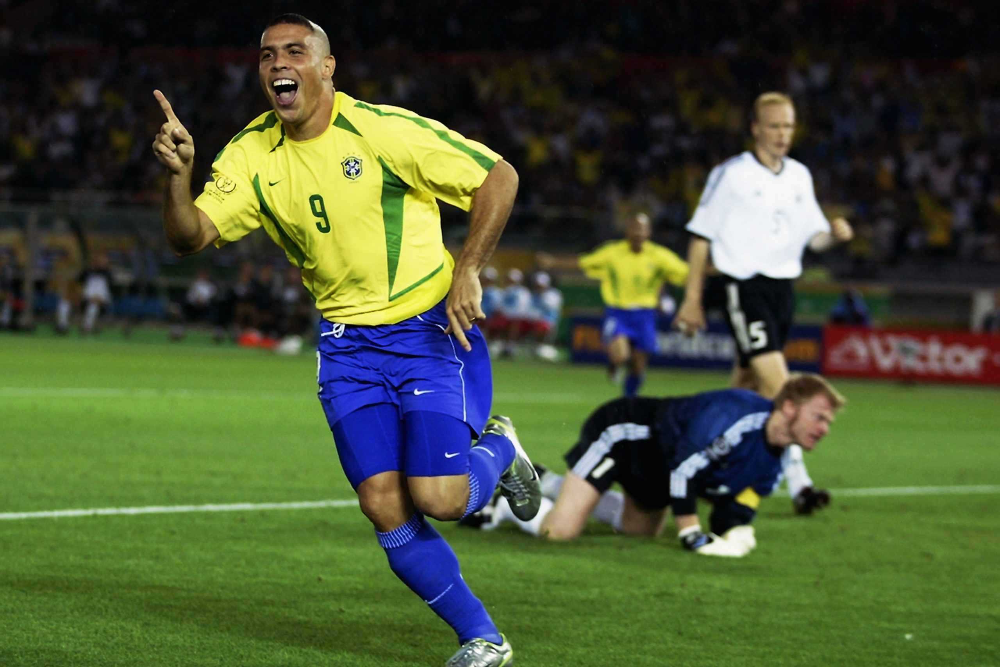
Ronaldo Nazário
Stürmer
🏆🏆(1994,2002)
Stürmer
🏆🏆(1994,2002)
Ronaldo war einer der ❤️🔥 gefährlichsten Torjäger der Fußballgeschichte.
Mit acht Toren bei der WM 2002 führte er Brasilien zum Titel.
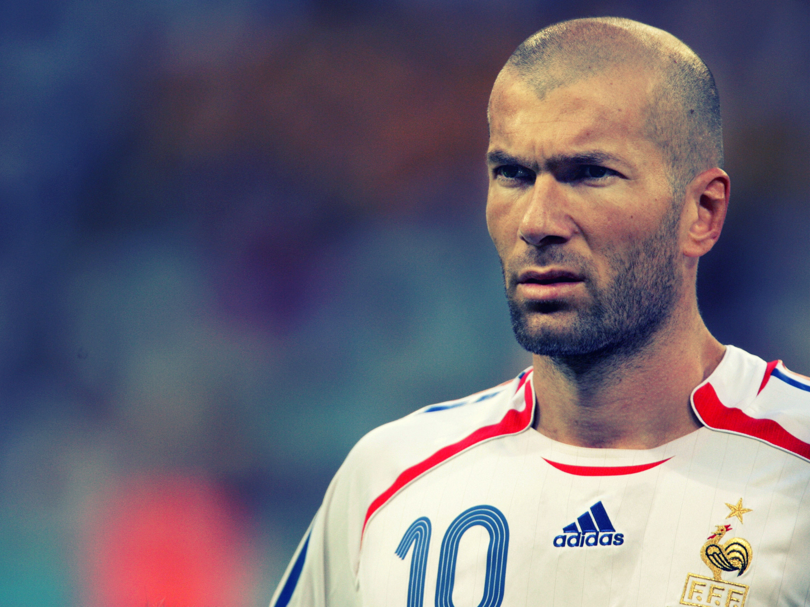
Zinedine Zidane
Offensives Mittelfeld
🏆(1998)
Offensives Mittelfeld
🏆(1998)
Zidane erzielte zwei Kopfballtore im WM-Finale 1998 gegen Brasilien
und führte Frankreich zum 🏅ersten Weltmeistertitel.
Miroslav Klose
Stürmer
🏆(2024)
Stürmer
🏆(2024)
Klose hält mit ⚽ 16 Toren den Rekord für die meisten Tore
in der Geschichte der FIFA-Weltmeisterschaft.
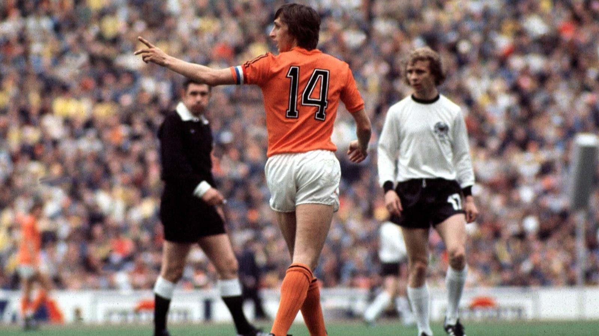
Johan Cruyff
Stürmer/Mittelfeld
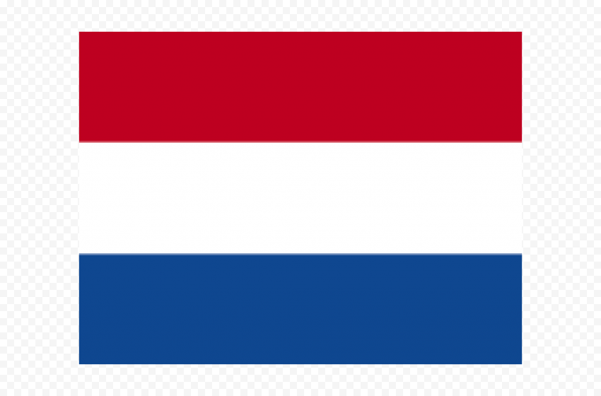
Stürmer/Mittelfeld
Cruyff gewann nie eine Weltmeisterschaft, führte die Niederlande aber 1974 ins Finale
und prägte 🏅 den modernen Offensivfußball wie kaum ein anderer.
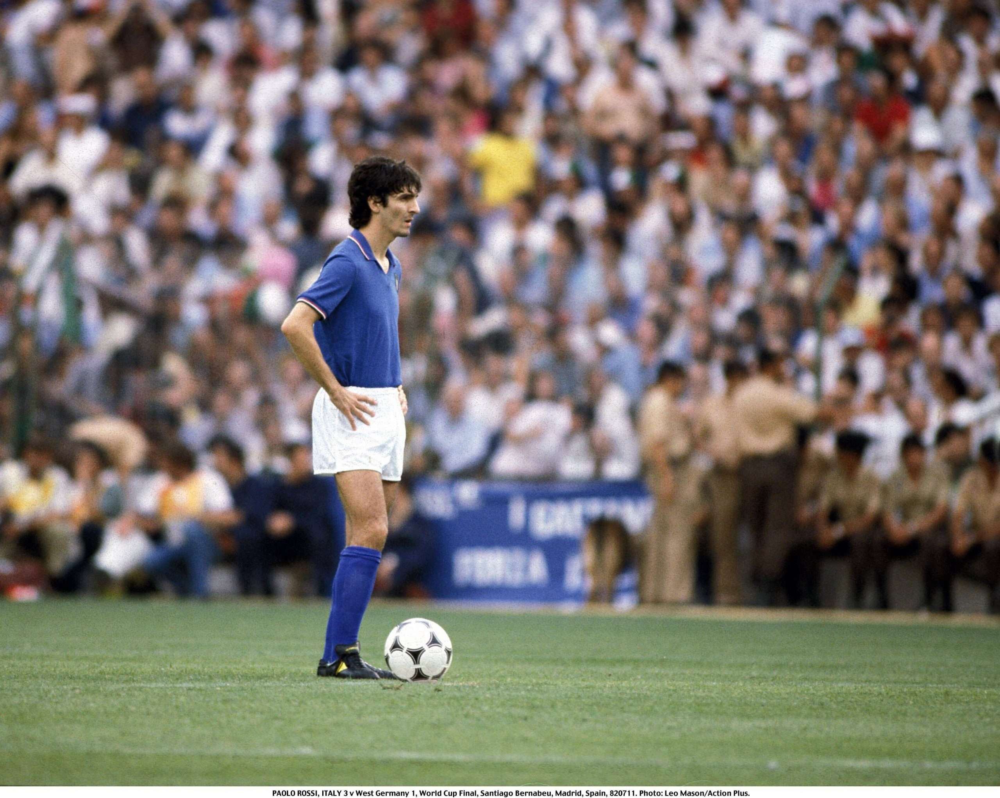
Paolo Rossi
Stürmer
🏆(1982)
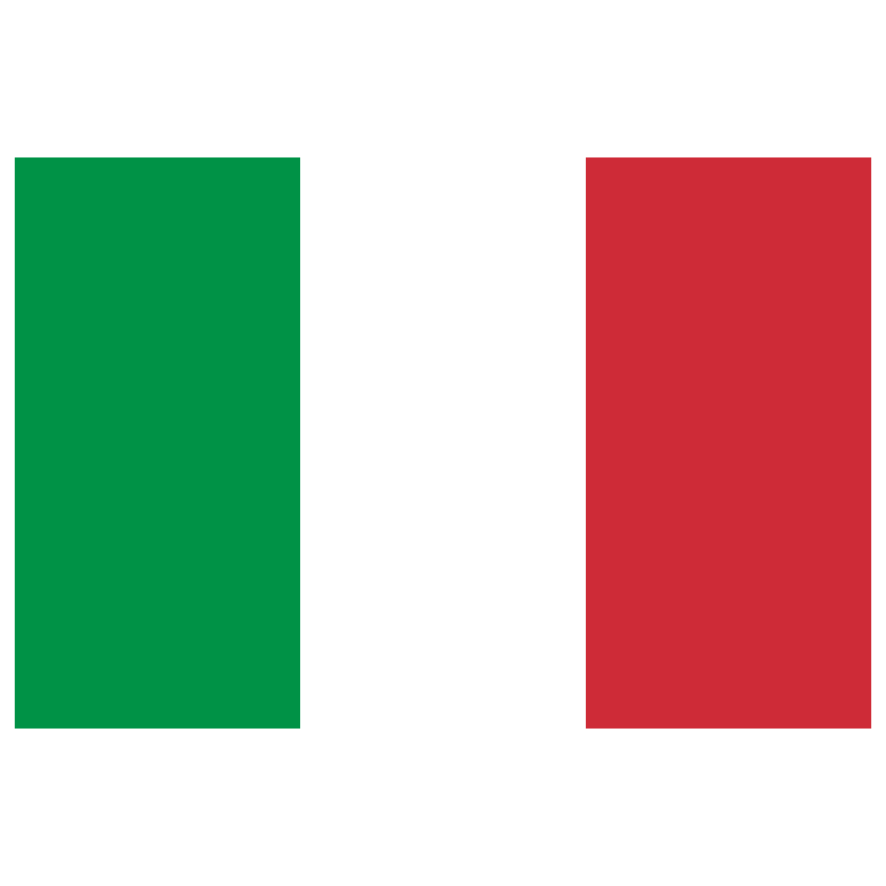
Stürmer
🏆(1982)
Mit sechs Toren wurde Rossi Torschützenkönig der WM 1982
und führte Italien 🏆 zum Weltmeistertitel.
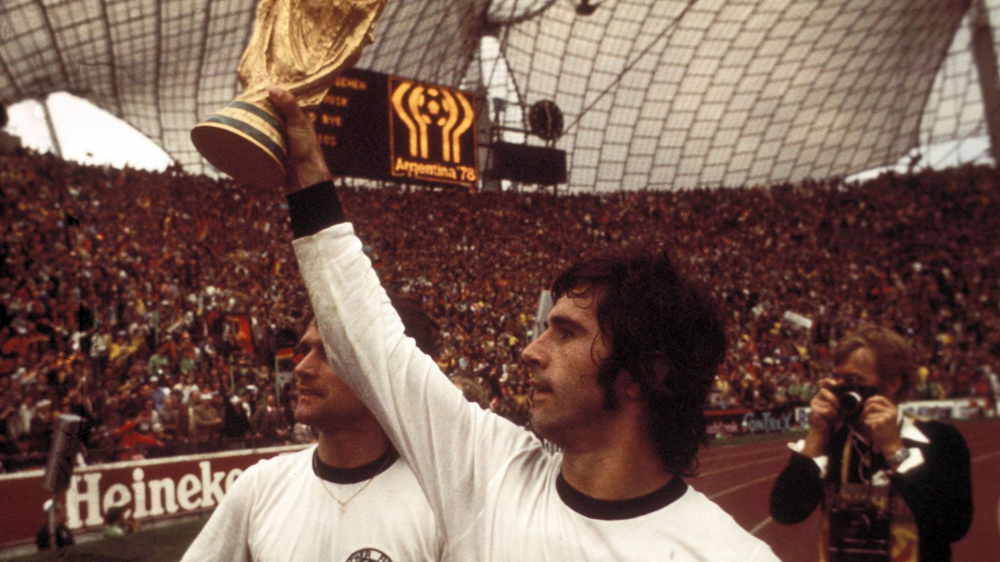
Gerd Müller
Stürmer
🏆(1974)
Stürmer
🏆(1974)
Gerd Müller erzielte das entscheidende Tor im WM-Finale 1974.
Er war einer ⭐ der erfolgreichsten Torjäger seiner Generation.